1
|
Sichtscheiben
|
| 1.1 |
Sicherheitssichtscheiben ohne Filterwirkung mit höchstem Niveau mechanischer Schutzfunktion |
| |
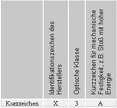
|
1.2 |
Sichtscheiben mit Filterwirkung |
| 1.2.1 |
Schweißerschutzfilter |
| |
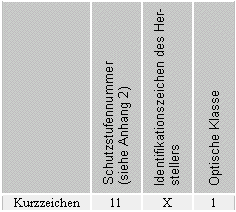
|
1.2.1.1 |
Schweißerschutzfilter mit mechanischer Schutzfunktion |
| |
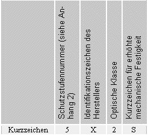 |
1.2.1.2 |
Schweißerschutzfilter mit umschaltbarer Schutzstufe
(nach DIN EN 379) |
| |
An die Stelle der Schutzstufennummer treten die Schutzstufennummern der Hell- und Dunkelstufe, getrennt durch einen Schrägstrich. Ist der Dunkelzustand von Hand einstellbar, sind die Grenzen des erreichbaren Schutzstufenbereiches mit Bindestrich getrennt zu kennzeichnen. |
| |
Die optische Klasse nach DIN EN 166 wird – durch Schrägstriche getrennt – um die Streulichtklasse und die Homogenitätsklasse nach DIN EN 379 ergänzt; hier z.B. 1/3/2. |
| |
Beispiel einer vollständigen Kennzeichnung: |
| |
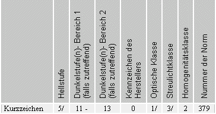 |
1.2.1.3 |
Schweißerschutzfilter mit zwei Schutzstufen
(nach DIN EN 379) |
| |
An die Stelle der einzigen Schutzstufennummer treten die Schutzstufennummern der Hell- und Dunkelstufe(n) durch ein + - Zeichen getrennt, z.B. 6 + 10. |
| |
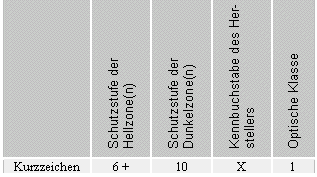
Zusätzlich sind gegebenenfalls die Zeichen für die Erfüllung von Zusatzanforderungen nach DIN EN 166 anzubringen. |
1.2.2 |
UV-Schutzfilter |
| 1.2.2.1 |
UV-Schutzfilter ohne mechanische Schutzfunktion |
| |
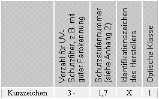 |
1.2.2.2 |
UV-Schutzfilter mit mechanischer Schutzfunktion |
| |
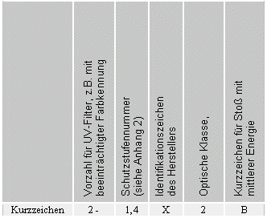 |
1.2.3 |
IR-Schutzfilter |
| 1.2.3.1 |
IR-Schutzfilter ohne mechanische Schutzfunktion |
| |
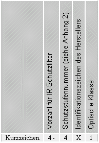 |
1.2.3.2 |
IR-Schutzfilter mit mechanischer Schutzfunktion und Nichthaften von Schmelzmetall |
| |
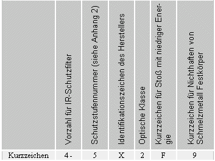 |
1.2.4 |
Sonnenschutzfilter |
| 1.2.4.1 |
Sonnenschutzfilter für gewerblichen Gebrauch |
| |
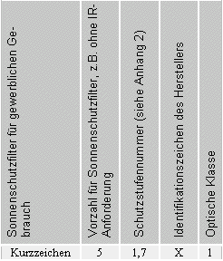 |
1.2.5 |
Sonnenschutzfilter mit mechanischer Schutzfunktion |
| |
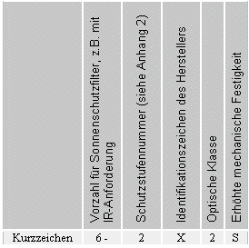 |
1.3 |
Vorsatzscheiben |
| |
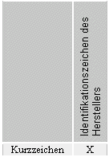 |